01
Nuestro pequeño universo
Una página hecha para guardar lo bonito: los días, las fotos, las palabras y todo eso que se siente mejor cuando lo vivimos juntos.
Desde el 11 de abril de 2026
Galería de momentos


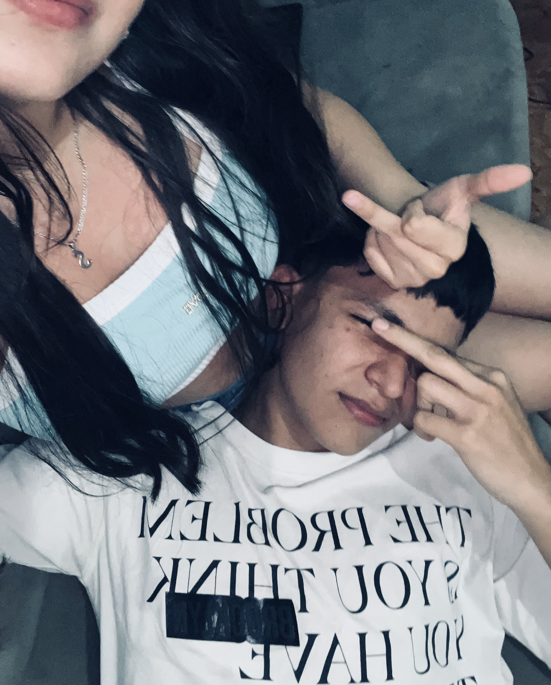

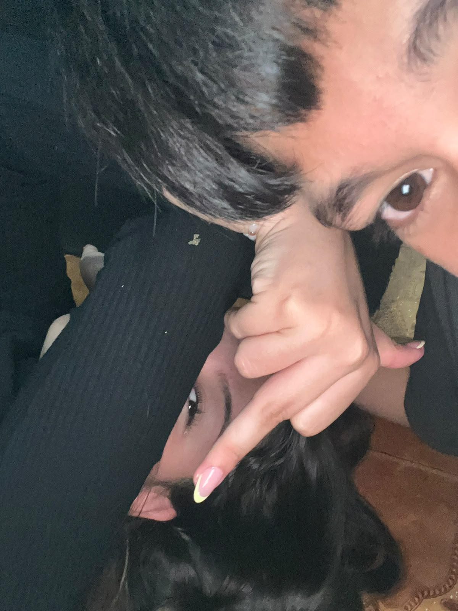
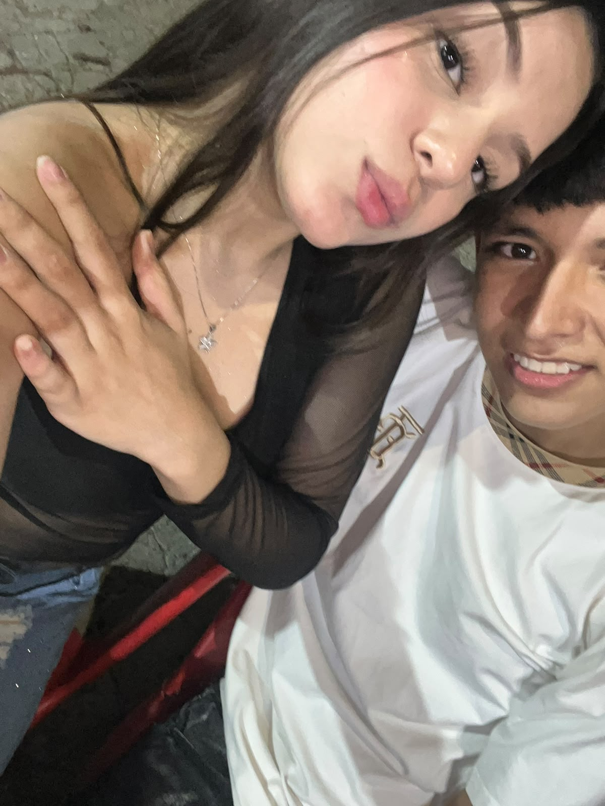
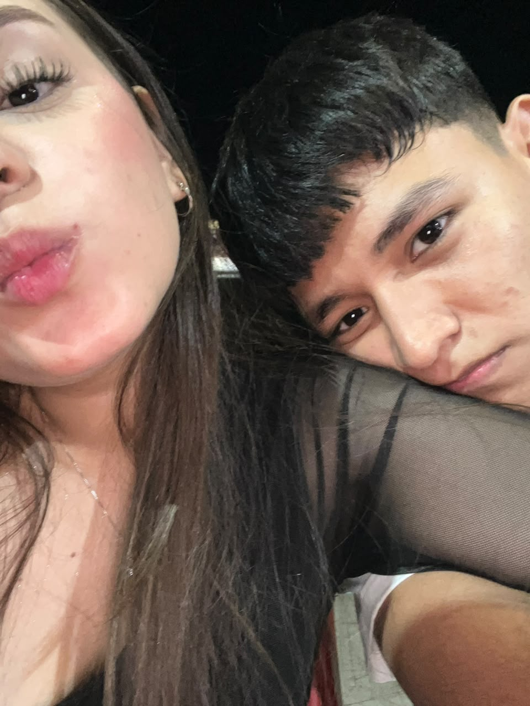
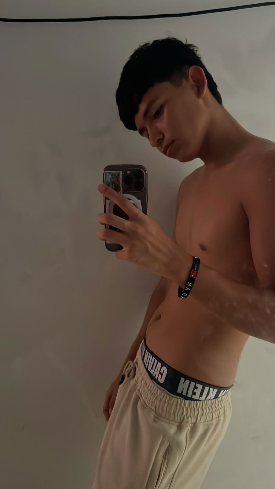
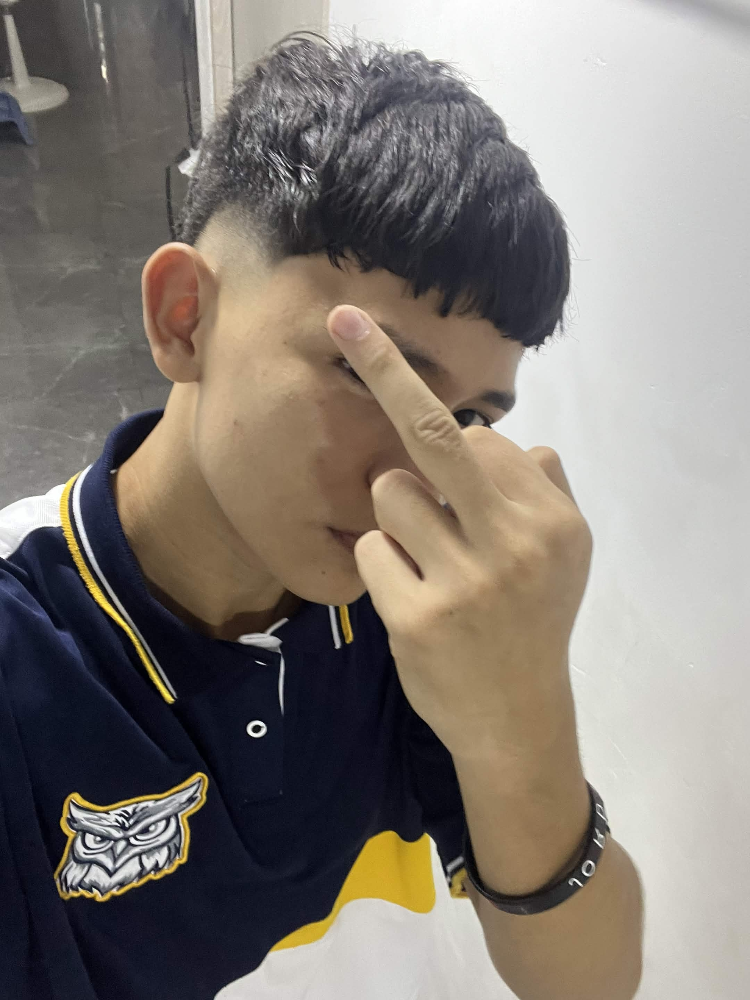
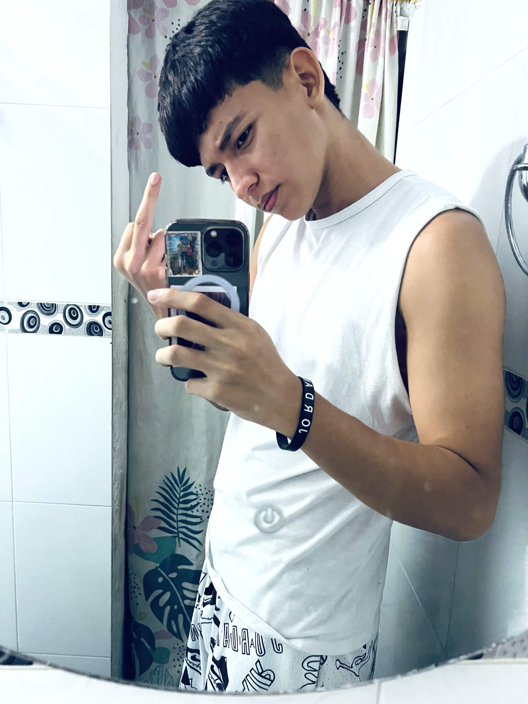
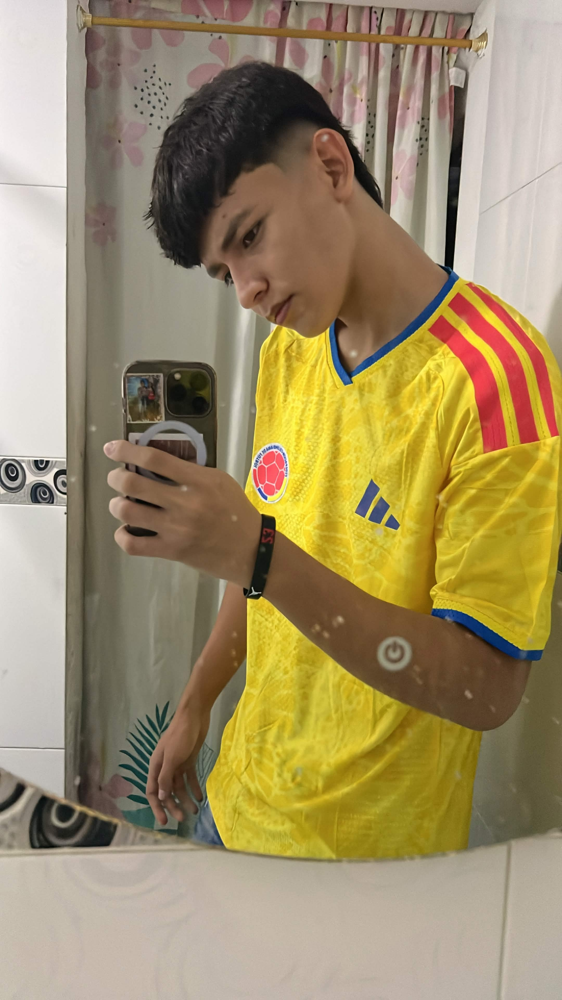
Nuestra banda sonora
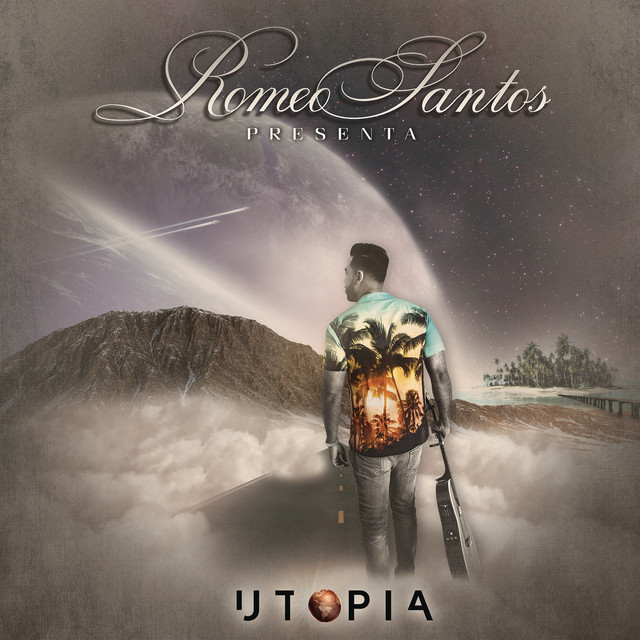
Aventura
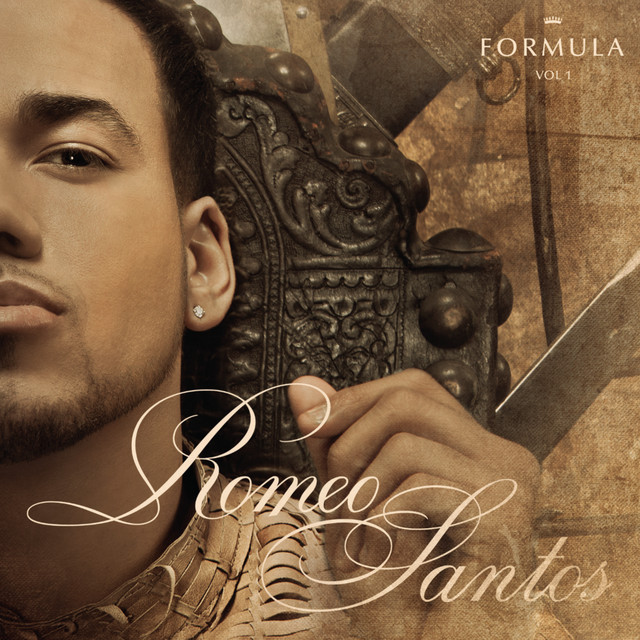
Romeo Santos
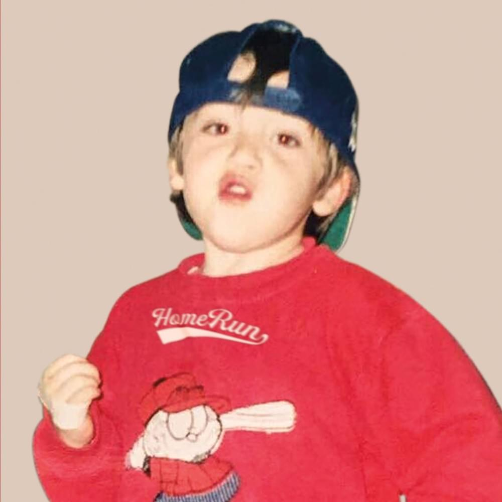
Paulo Londra

Romeo Santos
Santiago Cruz
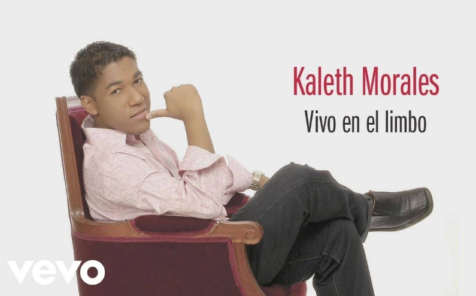
Kaleth Morales
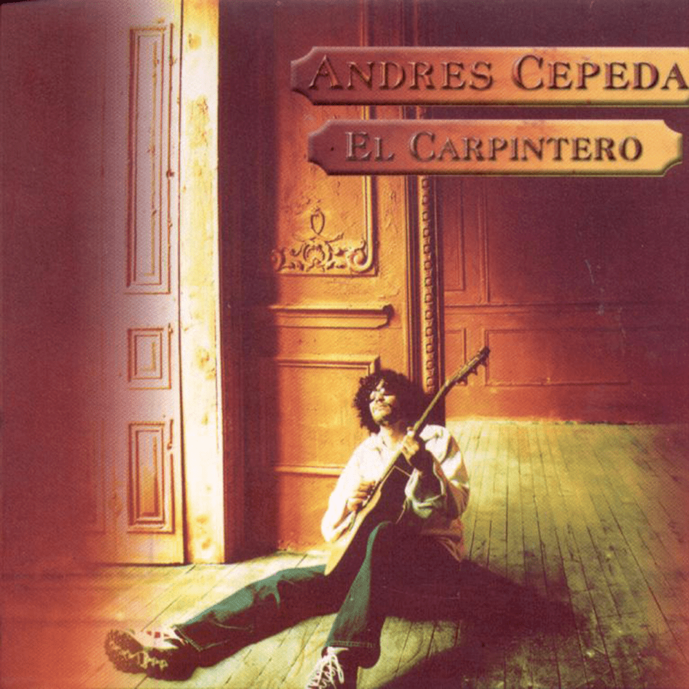
Andres Cepeda
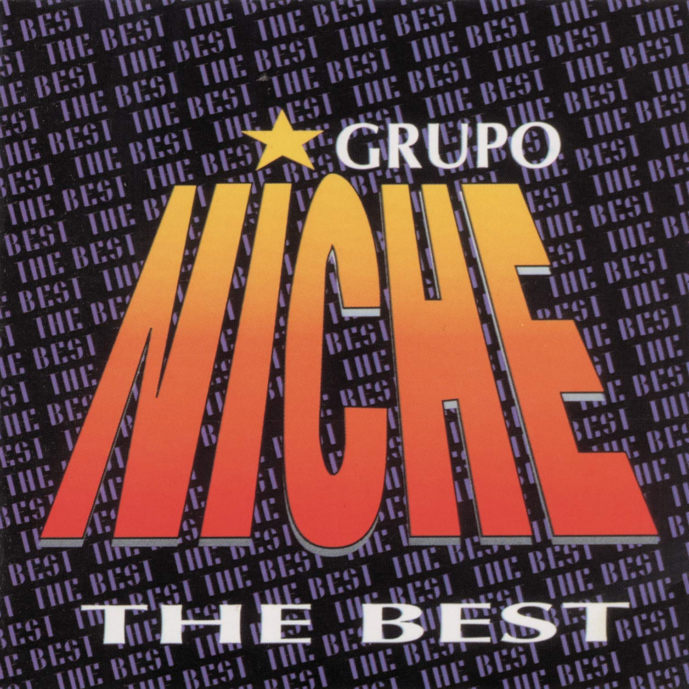
Grupo niche
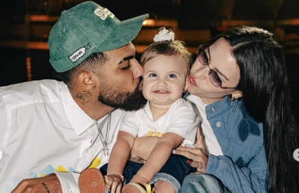
Jhay Wheeler
Para cuando quieras leerme
Hay palabras que no caben en un mensaje normal. Esta carta queda aquí para recordarte lo mucho que significas para mí.
Presiona el botón y la carta aparecerá aquí.